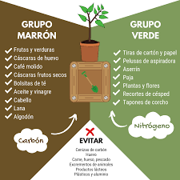
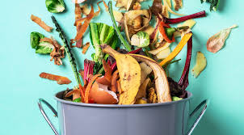

Retiene la humedad del suelo Permite el paso del aire Controla la erosión Mejora la estructura del suelo Adherimos más materia orgánica al suelo Tendremos menos necesidades de usar fertilizantes Las plantas crecerán más saludables Ayudamos a conservar el ambiente
Primero. Para no tener los desperdicios ni la basura regada o mosqueándose.  Segundo. En lugar de comprar abono en el cual voy a gastar, mejor lo hago yo con los desperdicios. Tercero. Ayudo a cuidar el ambiente, además que me deshago de la basura obteniendo un beneficio y un excelente fertilizante que me sale gratis.
1. Devuelve nutrientes a la tierra, controla la erosión y evita el desgaste del suelo causado por el lavado por lluvia. 2. Corrige la estructura de los suelo y actúa como esponja que retiene agua, que libera poco a poco en beneficio de las plantas.  3. Retiene la humedad y permite el paso del aire. 4. Recicla y reduce el volumen de desechos orgánicos, para convertirlos en abono. 5. Sirve como antibiótico en contra de microorganismos.